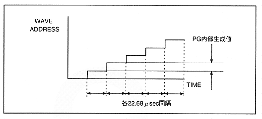

When the oscillation frequency is constant (when the internal generation of PG is constant in all Fs cycles), the output of the address pointer becomes a straight line as shown in Fig. 4.20, and it can be read without changing the waveform on the waveform RAM I can.
The address pointer is apparently a straight line, but actually it is calculated every 1 Fs cycle, so draw a staircase-like locus as shown in Figure 4.21. This step becomes the internally generated value of PG.
Figure 4.21 Enlarged view of address pointer output

When the frequency is increased, the PG generation value increases, so the PG output and address pointer output values (functions) have a steep slope.
Conversely, when the frequency is lowered, the PG generation value decreases, so the PG output value and the address pointer output value have a gentle slope as shown in Figure 4.22.